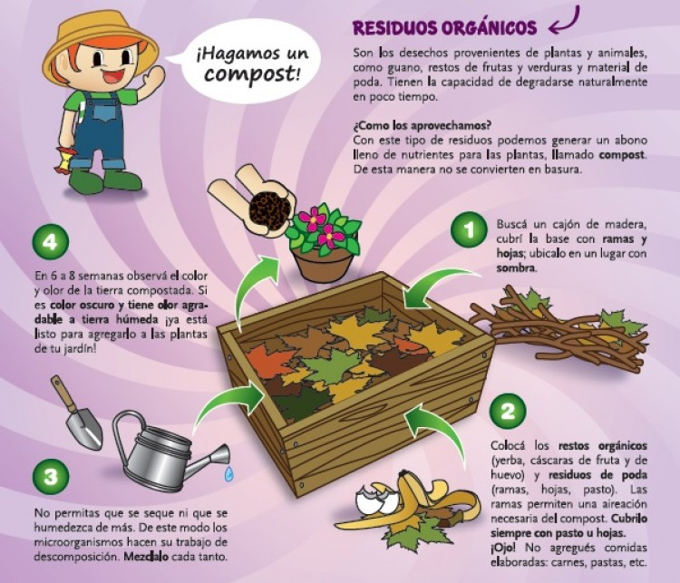

La Huerta de Tuti
Los restos orgánicos son los que más se generan en los hogares y, en promedio, constituyen el 50 por ciento de los residuos que se depositan en los vertederos. Los desechos de vegetales y frutas, restos de comida, restos de jardín, etc., se descomponen rápidamente y pueden utilizarse para convertirlo en un abono rico en nutrientes que se denomina compost.
